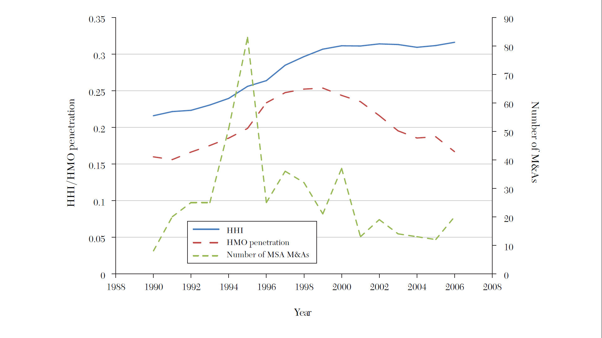
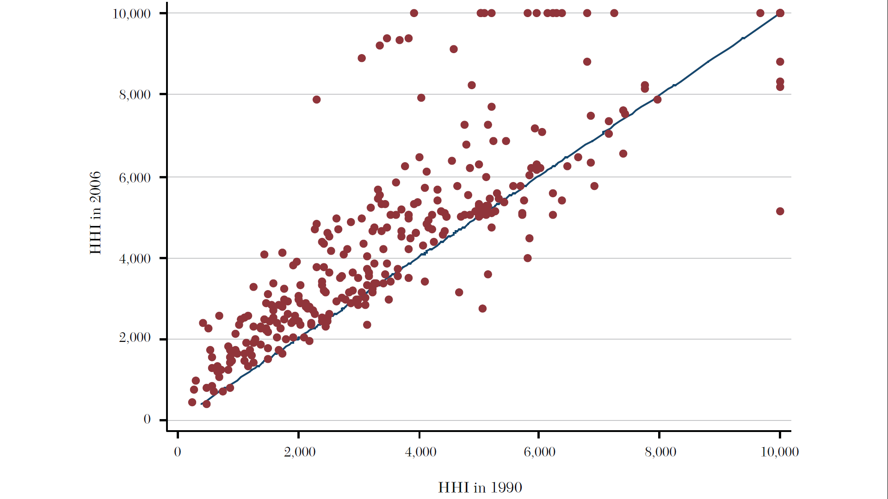
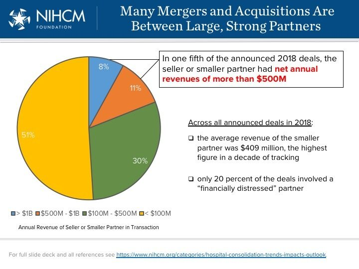
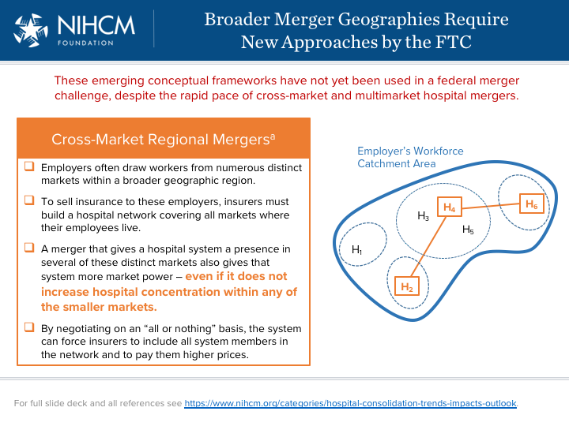
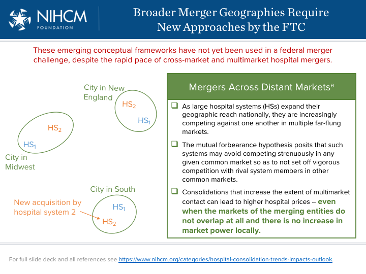

ECON 372 · Economics of Health Care Markets
Emory University
Objective: Firms \(i = 1, \dots, N\) choose quantities \(q_{i}\) to maximize profits.
Profit function: \[\pi_{i} = q_{i} (P(Q) - c)\]
where:
Each firm maximizes profit by choosing \(q_{i}\) such that: \[\frac{\partial \pi_{i}}{\partial q_{i}} = P(Q) + q_{i} P'(Q) - c = 0\]
Rearrange to express the markup of price over marginal cost for firm \(i\): \[\frac{P(Q) - c}{P(Q)} = \frac{P'(Q) q_{i}}{P(Q)}\]
Using market share \(s_{i} = \frac{q_{i}}{Q}\): \[\frac{P(Q) - c}{P(Q)} = \frac{s_{i}}{\epsilon}\]
where \(\epsilon = \frac{P(Q)}{Q} \cdot \frac{dP}{dQ}\) is the market demand elasticity.
Denote the Lerner index by \(L_{i} = \frac{P(Q) - c}{P(Q)}\) and derive weighted average:
\[L_{avg} = \sum_{i=1}^{N} s_{i} L_{i} = \sum_{i=1}^{N} s_{i} \times \frac{s_{i}}{\epsilon} = \frac{1}{\epsilon}\times \sum_{i=1}^{N} s_{i}^{2}\]
Define the Herfindahl-Hirschman Index (HHI) as: \[\text{HHI} = \sum_{i=1}^{N} s_{i}^2\]
Conclusion: Higher market concentration (higher HHI) leads to higher markups over marginal cost, linking market power (HHI) to markup in Cournot competition.
Lots of subjectivity…
Almost any way you define it, hospital markets are more and more concentrated (less competitive) in recent decades.


Historical perception of hospital competition as “wasteful” and assumption that more capacity means more (unnecessary) care:

Two ways this can happen theoretically:


Some hope here following the No Surprises Act (in effect January 2022):
But patient can be asked to waive rights